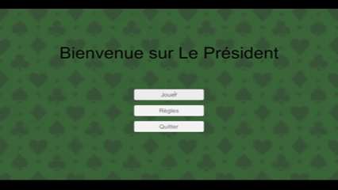
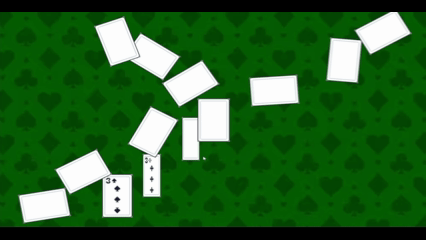
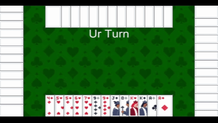

<!DOCTYPE hmtl>
<hmtl lang="fr">
    <head>
        <meta charset="UTF-8">
        <script src="../js/Paths.js"></script>
    </head>

    <body>
        <site-header></site-header>

        <main>
            <div class="head-page">
                <h1>TweenCore</h1>
                <h3>2025 - Unity C# - Package - Solo - 1 mois</h3>
                <h1>Tool programmer</h1>
            </div>

            <div class="main-content">
                <!-- Contexte -->
                <div class="text-div">
                    <h1>Contexte</h1>
                    <p>
                        <strong>TweenCore</strong> est un <strong>package</strong> Unity qui permet de faire 
                        des <strong>animations</strong>, principalement en 2D et / ou pour l'UI.
                        <br><br>
                        On peut l'utiliser par <strong>code</strong> et par <strong>éditeur</strong>, 
                        en fonction de la complexité voulue. 
                        J'ai essayé de faire une structure similaire aux <strong>Tweens</strong> de <strong>Godot</strong>.
                    </p>
                </div>

                <div class="divider"></div>

                <!-- Exemple -->
                <div>
                    <!-- Text -->
                    <div class="text-div">
                        <h1>Exemple concret</h1>
                        <p>
                            Je l'ai utilisé pour un rendu de cours, on était en groupe de 3 Game Programmers 
                            et nous avions fait le jeu "Président" en 1 semaine.
                            <br><br>
                            Ici les animations ont été créées par script.
                        </p>
                    </div>

                    <!-- Image container -->
                    <div class="media-gallery">
                        <div class="media-item">
                            
                            <p>Animation des boutons et de la distribution des cartes</p>
                        </div>

                        <div class="media-item">
                            
                            <p>Animations d'échange de cartes entre 2 joeurs</p>
                        </div>

                        <div class="media-item">
                            
                            <p>Animation lorsque des joeurs jouent une ou plusieurs cartes, avec un peu d'aléatoire</p>
                        </div>
                    </div>
                </div>

                <div class="divider"></div>

                <div class="my-works">
                    <h1>Comment l'utiliser</h1>

                    <!-- Finished animation -->
                    <div class="preview">
                        <video controls autoplay loop muted playsinline>
                            <source src="../Assets//Projects/Personal/2025/TweenCore/SimpleDropAnim.mp4" type="video/mp4">
                        </video>
                        <div class="preview-text">
                            <h3>Animation finie</h3>
                            <p>
                                On peut faire une animation qui se joue <strong>une seule fois</strong> 
                                ou <strong>un certain nombre de fois</strong>.
                                <br><br>
                                Ici par exmple, le cube va descendre d'une certaine hauteur 7 fois d'affilée, 
                                avec un effet de <strong>rebond</strong> à chaque itération.</p>
                        </div>
                    </div>

                    <div class="divider"></div>

                    <!-- Infinite animation -->
                    <div class="preview">
                        <video controls autoplay loop muted playsinline>
                            <source src="../Assets/Projects/Personal/2025/TweenCore/InfiteAndLinkAnim.mp4" type="video/mp4">
                        </video>
                        <div class="preview-text">
                            <h3>Animation infinie & lien entre animations</h3>
                            <p>
                                On peut également faire des animations <strong>infinies</strong>, 
                                comme par exemple faire tourner un élément en boucle.
                                <br><br>
                                De plus, chaque <strong>TweenComponent</strong> et <strong>property</strong> ont 
                                des <strong>UnityEvent</strong> et <strong>C# event</strong> à chaque état, 
                                pour faire certaines actions lorsqu'on le souhaite.
                                <br><br>
                                Ici le triangle va se mettre à tourner à l'infini une fois que le carré aura fini son animation.
                        </div>
                    </div>

                    <div class="divider"></div>

                    <!-- Dragon's Cadence -->
                    <div class="preview project">
                        
                        <div class="preview-text">
                            <h2>Dragon's Cadence</h2>
                            <p>2026 - Unity - Android - Puzzle game - Groupe (8) - 1 mois</p>
                            <h3>Gameplay</h3>
                        </div>
                    </div>

                    <div class="divider"></div>

                    <!-- Sokovolt -->
                    <div class="preview project">
                        <!--  -->
                        <div class="preview-text">
                            <h2>Sokovolt</h2>
                            <p>2025 - Godot - PC - Sokoban - Groupe (5) - 2 mois</p>
                            <h3>Gameplay - Level Designer</h3>
                        </div>
                    </div>
                </div>
            </div>
        </main>

        <site-footer></site-footer>
    </body>
</hmtl>